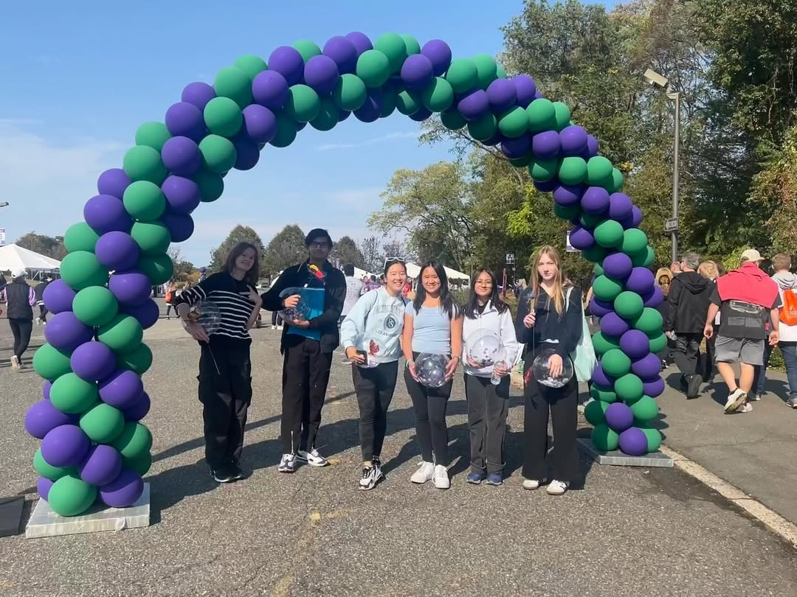

Our Mission
Our mission is to help other teenagers and senior community members within Bergen County navigate through the challenges of having, caretaking, or being someone with Alzheimer’s disease while encouraging others to do the same. In order to carry out our goals, we will be volunteering at assisted living facilities, educating teens about AD and the latest research, connecting with experts within the field, and hosting/participating in community wide events.
As per the AFA guidelines, some of the purposes carried out among all AFA chapters include:
- Raising awareness among teenagers and the general public about Alzheimer’s disease
- Providing education, counseling and support to young family members
- Providing a space for teens to share feelings and experiences with other teens and experts who “get it"
- Referring teens and their family members to various programs and supportive services from both AFA and its member organizations.
- Helping to support AFA’s mission to provide support, services and education to individuals, families and caregivers affected by Alzheimer’s disease and related dementias nationwide, and fund research for better treatment and a cure